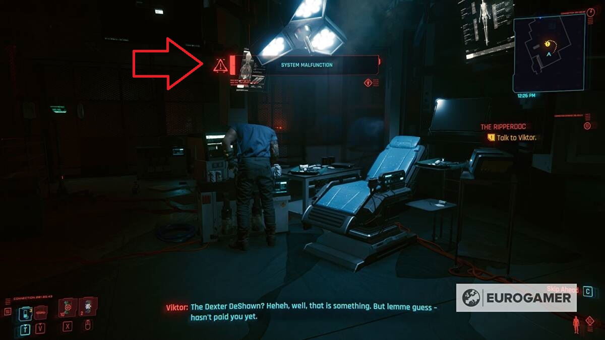
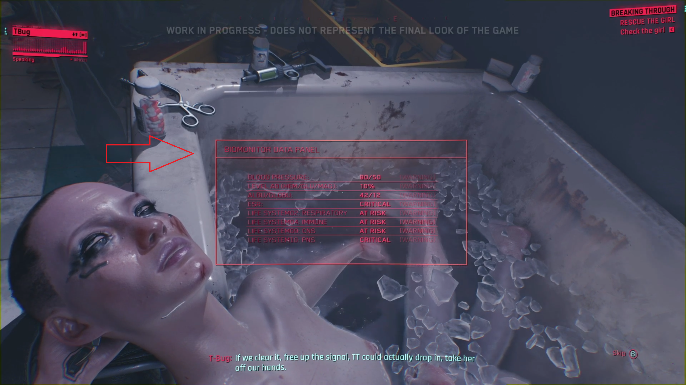
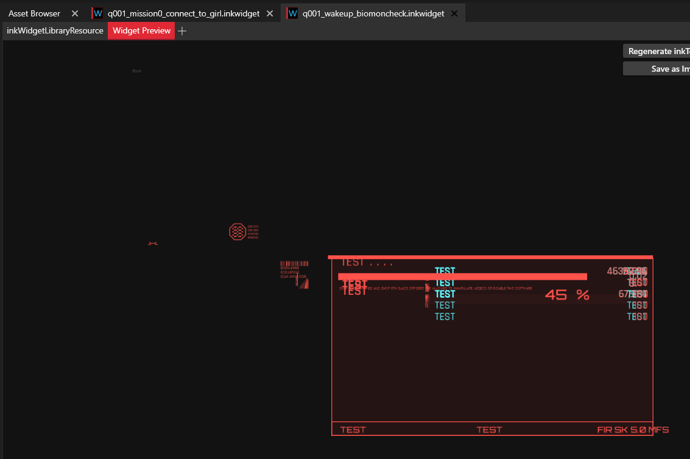
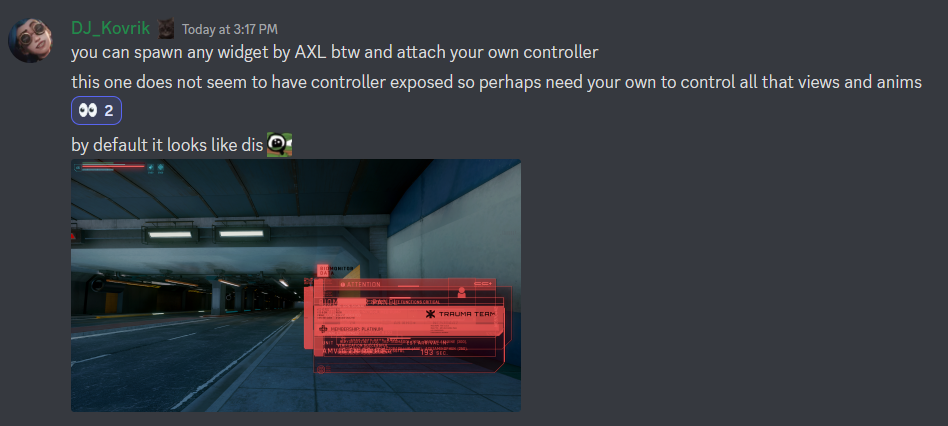

2023-01-30
Blackboard internals
Trying to demystify about IBlackboard so-called DelayedListener, and here's what people taught me:
credits to psiberx
you register a listener (delayed or not) the listener is fired when:
- value has changed with
Set*() - value is set and unchanged but
forceparameter is true Signal*() called explicitly
delayed listener is just called later, in the other part of the cycle.
Mixing listeners, events and callbacks
But internal mechanics are different from IBlackboard, as stated by psiberx.
as a courtesy of Technic235
@wrapMethod(ArcadeMachine)
protected func StartGlitching(glitchState:EGlitchState, opt intensity:Float) -> Void {
if Equals(this.m_controllerTypeName, n"ArcadeMachineController") {
this.EVMSetupArcadeStaticGlitchListener();
};
}
@addMethod(InteractiveDevice)
protected func EVMSetupArcadeStaticGlitchListener() -> Void {
let devicePS = this.GetDevicePS();
if devicePS.evmArcadeStaticEventID == 0u {
let evt = new EVMArcadeStaticGlitchEvent();
let delay: GameTime = GameTime.MakeGameTime(0, 0, 0, RandRange(120, 301)); // days, hours, opt minutes, opt seconds
devicePS.evmArcadeStaticEventID = GameInstance.GetTimeSystem(devicePS.GetGameInstance()).RegisterDelayedListener(this, evt, delay, -1);
};
}
public class EVMArcadeStaticGlitchEvent extends Event {
// intentionally empty
}
@addMethod(ArcadeMachine)
protected cb func OnEVMArcadeStaticGlitchEvent(evt:ref<EVMArcadeStaticGlitchEvent>) {
let delaySystem = GameInstance.GetDelaySystem(this.GetGame());
let callback = new EVMDelayArcadeStaticGlitchCallback();
callback.machine = this;
delaySystem.DelayCallback(callback, RandRangeF(0, 10), true); // randomize start times
}
class EVMDelayArcadeStaticGlitchCallback extends DelayCallback {
let machine: ref<ArcadeMachine>;
protected func Call() -> Void {
this.machine.EVMStartArcadeStaticGlitch();
}
}
@addMethod(ArcadeMachine)
protected func EVMStartArcadeStaticGlitch() {
if !this.evmSparkActive {
GameObjectEffectHelper.ActivateEffectAction(this, gamedataFxActionType.Start, n"hack_fx");
let delaySystem = GameInstance.GetDelaySystem(this.GetGame());
let callback = new EVMArcadeStaticGlitchCompletedCallback();
callback.machine = this;
delaySystem.DelayCallback(callback, 13, true);
this.evmSparkActive = true;
};
}
class EVMArcadeStaticGlitchCompletedCallback extends DelayCallback {
let machine: ref<ArcadeMachine>;
protected func Call() -> Void {
this.machine.evmSparkActive = false;
}
}
Research on UI
Next step is to give a better look-and-feel to current addiction-related notifications. So far, I've used SimpleScreenMessage which works just fine but is used mostly for Relic malfunction / Network breach notification. 
A way better look-and-feel / lore-friendly UI would probably be this one: 
So let's browse WolvenKit Asset browser and find out where it's at:
a couple interesting ones found while searching:
- activity_log.inkwidget

- generic_fullscreen_message_notification.inkwidget

finally found out:
- q001_mission0_connect_to_girl.inkwidget

- q001_wakeup_biomoncheck.inkwidget 
Then, where is it used in the code ?
Well haha, trickier.
- no relevant reference to
q001 - points at
DeviceBase - open many rabbit holes
So maybe inkWidgetLibraryResource from WKit ?
Hey, results seem much better !
gameuiTooltipsManagerATooltipDataInteractionsHubGameController
Also, DJ_Kovrik to the rescue:

Which also brought me to:

My guess so far is that the closest inkGameController to what I need is the inkHUDGameController,
except that I'll need only one inkAnimProxy, the one returned from calling PlayLibraryAnimation.
But turns out it wasn't the full solution, see the follow-up.